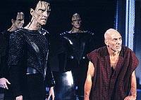
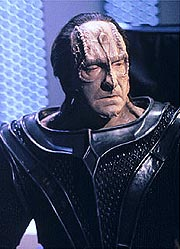
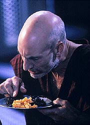
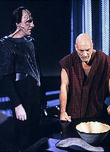
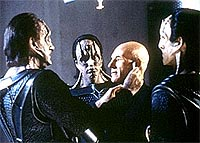

|
MANCHETE
DO EPISDIO
Esprito
de Picard rouba o show e
vence a fora bruta dos Cardassianos
Episdio
anterior | Prximo
episdio
Sinopse:
Data Estelar: 46360.8.
Em uma tentativa de obter informaes de seu refm, os
Cardassianos injetam uma droga em Picard que o fora a responder a
todas as perguntas sem hesitar ou mentir. Ele logo revela a natureza
exata da misso da Federao para destruir armas metagnicas em
Celtris III. Entretanto, seu captor Cardassiano, gul Madred, revela
que a situao em Celtris III era apenas uma armadilha, preparada
para atra-lo para o espao Cardassiano. Os Cardassianos o
capturaram para descobrir qual estratgia a Federao usaria no
caso de um ataque. Quando Picard indica no saber nada sobre essa
estratgia, Madred comea a tortur-lo, violando a lei.
 De volta
Enterprise, gul Lemec informa ao capito Jellico, Riker e Troi que
Picard est sendo mantido prisioneiro. Jellico se prepara para
recuperar Worf e Beverly, que esto esperando no ponto de encontro
marcado, mas se recusa a autorizar Riker a promover uma misso de
resgate para Picard, dizendo que o capito provavelmente j est
morto. Lemec diz a Riker e Jellico que se o capito admitir que a
misso de Picard foi autorizada pela Federao, sua vida poder
ser poupada. Quando Jellico se recusa, Riker fica furioso e
dispensado do servio.
Jellico escolhe Data como substituto de Riker e, com a ajuda de
Geordi, eles deduzem que os Cardassianos falsearam a situao das
armas metagnicas para atrair Picard. Conforme a discusso
prossegue, eles tambm se do conta de que Picard est sendo
provavelmente torturado para revelar informaes que ele no tem,
e que as aes poderiam indicar que os Cardassianos esto
planejando um ataque.
 Jellico
leva a Enterprise a Minos Korva, onde ele acredita que podero
interceptar os Cardassianos e lanar uma primeira ofensiva. O resto
da tripulao avisa o capito dos riscos demasiados de iniciar
uma batalha com os Cardassianos em seu territrio, apontando que
eles no tm provas de que os Cardassianos esto se preparando
para a guerra e que milhares de vidas inocentes poderiam ser
perdidas. Ainda assim, Jellico segue com seu plano. Ao mesmo tempo,
um Picard exaurido e faminto segue resistindo a gul Madred.
Jellico se prepara para comear sua misso e viaja at o espao
Cardassiano em uma nave auxiliar. Entretanto, quando Geordi informa
a ele que o melhor piloto na nave Riker, o capito engole seu
orgulho e pede ao primeiro-oficial que lidere a excurso. Riker
concorda, e ele e Geordi so bem-sucedidos em seu esforo de
implantar minas por todo o setor, por instruo de Jellico. Em
pouco tempo, um furioso Lemec contata Jellico, que diz que ir
detonar as minas se os Cardassianos no se retirarem e devolverem
Picard. Lemec concorda e um fraco e desorientado Picard logo
devolvido Enterprise, dispensando Jellico do comando da nave.
Comentrios:
 Se
a primeira parte sobre a tripulao e sua dura adaptao ao
estilo intragvel capito Jellico, a segunda parte de "Chain
of Command" tem outro dono: Jean-Luc Picard. Nem tanto pelo
fato de ele ser o personagem mais proeminente do segmento, mas pela
atuao espetacular de Patrick Stewart.
A dinmica de Stewart com seu captor, interpretador por David
Warner, simplesmente incrvel. Apesar da aparente inferioridade,
impressionante como a resistncia de Picard se transforma na
maior humilhao a que o Cardassiano poderia ser submetido. um
show de atuao de parte parte e um drama to eloquente que
vale, sozinho, o episdio.
A bordo da Enterprise, a rivalidade entre Riker e Jellico atinge
massa crtica e o primeiro-oficial dispensado do servio. At
a a conduo da tenso foi bem feita. S se perdeu quando os
roteiristas resolveram oferecer a vingana a Riker, fazendo com que
Jellico fosse obrigado a convoc-lo para a misso. O fato de
Geordi oferecer Riker como o melhor para a misso de pilotagem soa
falso como uma nota de trs reais. Fica muito claro que o artifcio
do roteiro serve apenas para colocar Riker por cima novamente, algo
que o personagem no conseguiu produzir por si s, sem uma mozinha
artificial dos roteiristas.
 Jellico,
por sua vez, confirma o que j se pensava dele. A competncia do
sujeito mpar. Apenas nos incomoda sua viso estritamente
militar da misso. De toda forma, sempre interessante ver que
nem todo capito da Frota como o humanista Picard.
Tambm no surpresa sua escolha de Data para primeiro-oficial.
Desde a primeira parte o capito j parecia apreciar a
imparcialidade e preciso do andride da Enterprise. Esquisito
mesmo foi ver Data no uniforme vermelho. Talvez seja s o costume,
mas sua pele dourada no parece cair bem com o tom da blusa de
comando...
Alm de todo o trabalho como personagens, o nvel da histria
continua no mesmo patamar de qualidade da primeira parte. Ou seja,
excelente. A trama poltico-militar entre a Federao e Cardssia
envolvente e cheia de reviravoltas, capaz de alimentar sozinha
qualquer roteiro.
 Aqui, a combinao
de bom aproveitamento dos personagens e de uma trama interessante e
imprevisvel produz um dos melhores episdios da srie. E, a propsito,
eu j mencionei a espetacular atuao de Patrick Stewart?
Citaes:
Jellico - "Let's drop ranks
for a moment. I don't like you. I think you are subordinate,
arrogant, willful and I don't think you are particularly good first
officer, but you are also the best pilot in the ship."
("Vamos deixar a patente de lado um momento. Eu no gosto de
voc. Acho-o insubordinado, arrogante, voluntariosoe e no acho
que particularmente um bom primeiro-oficial, mas voc tambm
o melhor piloto na nave.")
Riker - "Well, Now that the ranks are dropped, Captain. I
don't like you either. You are arrogant and close-minded. You need
to control everything and everyone. You don't provide an atmosphere
of trust and you don't inspire these people to go out of the way for
you. You've got everyone wound up so tight there's no joy in
anything. I don't think you are a particularly good captain."
("Bem, agora que as patentes esto de lado, capito. Eu no
gosto de voc tambm. Voc arrogante e tem a mente fechada. Voc
precisa controlar tudo e a todos. Voc no fornece uma atmosfera
de confiana e voc no inspira as pessoas a trabalharem para voc.
Voc deixou todo mundo to espremido que no h diverso em
nada. Eu no acho que seja particularmente um bom capito.")
Picard - "There are four lights!"
("H quatro lmpadas!")
Trivia:
 David Warner, que aqui interpreta Gul Madred, veterano de Jornada.
Esteve presente em "Jornada nas Estrelas V" como
St. John Talbot e em "Jornada nas Estrelas VI" como
o chanceler Gorkon.
David Warner, que aqui interpreta Gul Madred, veterano de Jornada.
Esteve presente em "Jornada nas Estrelas V" como
St. John Talbot e em "Jornada nas Estrelas VI" como
o chanceler Gorkon.
Depois de ver a atuao de Patrick Stewart para esse episdio, a
produtora Jeri Taylor disse que "no possvel que existam
em Hollywood cinco atores melhores do que Patrick. Ele deu um show
aqui!"
Michael Piller concorda. "No h nada melhor do que colocar
Patrick Stewart e outro ator de talento [David Warner] juntos em uma
sala por mais de uma hora." Piller lamenta que Patrick Stewart
no tenha sido indicado ao Emmy naquele ano.
Ficha
tcnica:
Escrito por Frank Abatemarco
Direo de Les Landau
Exibido em 21/12/1992
Produo: 137
Elenco:
Patrick Stewart como
Jean-Luc Picard
Jonathan Frakes como William Thomas Riker
Brent Spiner como Data
LeVar Burton como Geordi La Forge
Michael Dorn como Worf
Gates McFadden como Beverly Crusher
Marina Sirtis como Deanna Troi
Elenco convidado:
Ronny Cox como
capito Edward Jellico
John Durbin como gul Lemec
Heather Lauren Olson como Jil Orra
David Warner como gul Madred
Episdio
anterior | Prximo
episdio
|